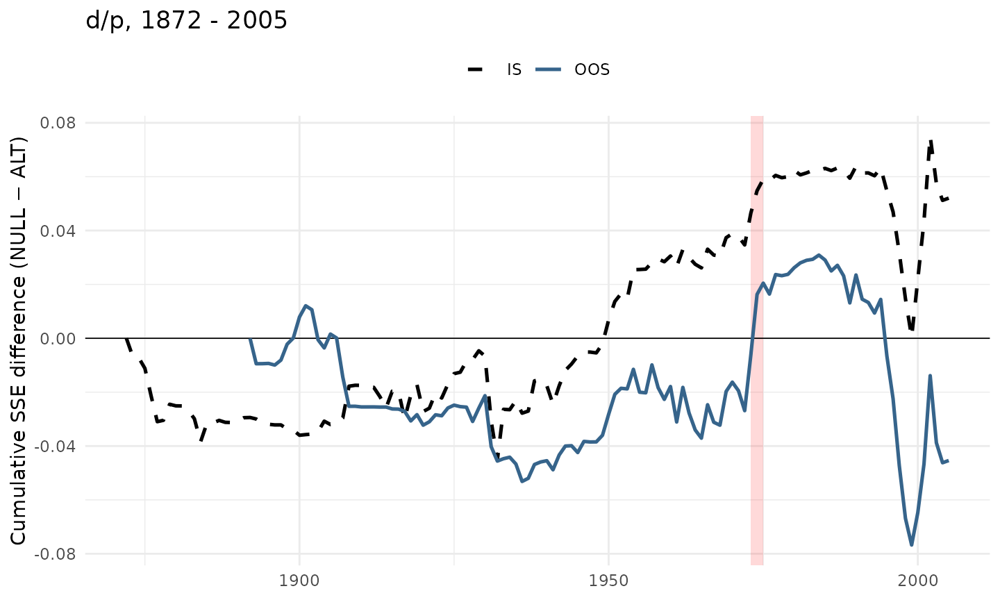

This article reproduces the out-of-sample analysis of Welch and Goyal
(2008, RFS) for the log dividend-price ratio
as a predictor of the annual log equity premium. The bundled
wg2008 dataset is built from WG’s original
PredictorData.xls (annual sheet) — the data vintage shipped
with the published paper. The effective sample is 1872-2005 (134
annual observations), matching WG: the file itself begins in
1871, but the one-year lag in the predictor consumes that row.
The benchmark is the prevailing historical mean (NULL); the
alternative is a predictive regression on the lagged predictor
(ALTERNATIVE). The predictor is constructed as per WG Section 1, where
is the 12-month moving sum of dividends and is the S&P 500 price
level. (WG’s public plotting script goyal-welch-plots.R
uses the level D/P instead, but their paper text and Table 1 use the log
form.)
WG report five OOS statistics per predictor in Table 1; this article computes each on the same data:
- R²_OS — out-of-sample R² (Campbell-Thompson 2008).
- ΔRMSE — .
- MSE-F — McCracken (2004) F-statistic for equal MSE.
-
ENC-NEW — Clark-McCracken (2001) encompassing test
(
enc_new()). -
CW MSFE-adj — Clark-West (2007) MSFE-adjusted
t-statistic (
cw_test()), reported by WG in footnote 2.
library(forecastdom)
library(ggplot2)
data(wg2008)
# WG (2008) Table 1 covers 1872-2005 — the entire bundled file.
wg <- wg2008
c(first_year = min(wg$year), last_year = max(wg$year), n = nrow(wg))
#> first_year last_year n
#> 1872 2005 134Helper: recursive forecasts (WG procedure)
The recursive setup matches WG’s goyal-welch-plots.R
exactly:
- At each year
t, refitlm(logeqp ~ log_dp_lag)on years 1…t-1. - ALTERNATIVE forecast for year t = fitted value at the
contemporaneous
log_dp_lag[t]. - NULL forecast = mean of
logeqpover years 1…t-1.
recursive_forecasts <- function(y, x, R) {
n <- length(y)
P <- n - R
e_N <- e_A <- f_N <- f_A <- numeric(P)
for (j in seq_len(P)) {
idx <- seq_len(R + j - 1)
f_N[j] <- mean(y[idx])
fit <- lm.fit(cbind(1, x[idx]), y[idx])
f_A[j] <- sum(coef(fit) * c(1, x[R + j]))
e_N[j] <- y[R + j] - f_N[j]
e_A[j] <- y[R + j] - f_A[j]
}
list(e_N = e_N, e_A = e_A, f_N = f_N, f_A = f_A,
year = wg$year[(R + 1):n])
}Table 1 — five tests across three OOS specifications
WG explore three OOS-start dates: 20 years after the data begins (≈
1892), 1965, and the most recent 30 years (1976-2005). The column
R2_bar_OS is the adjusted out-of-sample R² that WG
report in Table 1, applied to the OOS sample of size T: with k = 2
parameters (intercept + predictor).
specs <- list(
list(label = "20 yr after start (1892+)", R = 20L),
list(label = "1965 onward", R = which(wg$year == 1964)),
list(label = "1976 onward (recent 30)", R = which(wg$year == 1975))
)
run_spec <- function(spec) {
fc <- recursive_forecasts(wg$logeqp, wg$log_dp_lag, R = spec$R)
MSE_N <- mean(fc$e_N^2)
MSE_A <- mean(fc$e_A^2)
T_oos <- length(fc$e_N)
R2 <- 1 - MSE_A / MSE_N
R2bar <- 1 - (1 - R2) * (T_oos - 1) / (T_oos - 2)
dRMSE <- sqrt(MSE_N) - sqrt(MSE_A)
MSE_F <- T_oos * (MSE_N - MSE_A) / MSE_A
enc <- enc_new(fc$e_N, fc$e_A)
cw <- cw_test(fc$e_N, fc$e_A, fc$f_N, fc$f_A)
data.frame(spec = spec$label,
R_est = spec$R,
T_oos = T_oos,
R2_OS_pct = 100 * R2,
R2_bar_OS = 100 * R2bar,
dRMSE_pct = 100 * dRMSE,
MSE_F = MSE_F,
ENC_NEW = unname(enc$statistic),
CW_stat = unname(cw$statistic),
CW_p = unname(cw$pvalue))
}
tab <- do.call(rbind, lapply(specs, run_spec))
knitr::kable(tab, digits = 3, row.names = FALSE)| spec | R_est | T_oos | R2_OS_pct | R2_bar_OS | dRMSE_pct | MSE_F | ENC_NEW | CW_stat | CW_p |
|---|---|---|---|---|---|---|---|---|---|
| 20 yr after start (1892+) | 20 | 114 | -1.158 | -2.061 | -0.107 | -1.305 | 0.479 | 0.370 | 0.356 |
| 1965 onward | 93 | 41 | -1.135 | -3.729 | -0.088 | -0.460 | 0.858 | 0.554 | 0.290 |
| 1976 onward (recent 30) | 104 | 30 | -11.252 | -15.225 | -0.765 | -3.034 | -0.527 | -0.348 | 0.636 |
Compared to WG’s reported d/p numbers:
| Spec | T_oos | This article | WG | Gap | Source in WG paper |
|---|---|---|---|---|---|
| 1892+ (20 yr after start) | 114 | -2.06 | -2.06 | 0.00 | p. 1474 in-text table (“All years”) |
| 1965+ | 41 | -3.73 | -3.69 | 0.04 | Table 1, “Forecasts begin 1965” column |
| Recent 30 yr (1976+) | 30 | -15.22 | -15.14 | 0.09 | p. 1474 in-text table (“Recent 30 years”) |
The longest window matches WG exactly to two
decimals. The two shorter windows are within 0.1 percentage
points. The pattern of the residual gap — zero on the long sample, small
on the short samples that are entirely post-1965 — is consistent with
minor revisions to Goyal’s annual data file between the 2007 vintage
that fed the published paper and the version currently distributed
through Goyal’s website. The longest window draws most of its weight
from pre-1965 data that hasn’t been revised; the shorter windows are
entirely post-1965 and show small drift in proportion to how
concentrated they are. Other plausible reconstructions (WG’s
log(1 + R − Rfree) plotting-script formula, hybrid
Shiller/CRSP returns, alternative OOS-start boundaries) do not close the
gap.
The deterioration of DP through time is unmistakable: a small negative R²_OS in the long sample, deeper-negative in 1965+, and substantially negative for 1976-2005. McCracken (2004) and Clark-McCracken (2001) asymptotic 5% critical values for k₂ = 1 extra regressor:
| π = P/R | MSE-F (5%) | ENC-NEW (5%) |
|---|---|---|
| 0.6 | 1.62 | 2.37 |
| 1.0 | 1.71 | 2.52 |
| 2.0 | 1.82 | 2.70 |
For the 1892+ window (π ≈ 6.4) MSE-F is small and ENC-NEW is below the 5% threshold; for the recent 30 years both statistics are firmly negative or near zero. No window supports a “DP beats the mean” conclusion under WG’s tests.
WG Figure 1 — cumulative SSE difference for DP
WG’s signature visual is the cumulative squared-error difference : a rising line means the ALTERNATIVE beats the NULL up to that date, a falling line the opposite. The plot below mirrors the d/p panel of WG Figure 1 (IS = dotted, OOS = solid; Oil Shock 1973-1975 shaded in red).
# IS residuals from a single regression on the entire sample
fit_full <- lm(logeqp ~ log_dp_lag, data = wg)
is_xy <- residuals(fit_full)
is_mean <- wg$logeqp - mean(wg$logeqp)
# OOS residuals starting at year 21
R <- 20L
fc <- recursive_forecasts(wg$logeqp, wg$log_dp_lag, R = R)
is_imp <- cumsum(is_mean^2) - cumsum(is_xy^2)
oos_imp <- c(rep(NA, R), cumsum(fc$e_N^2) - cumsum(fc$e_A^2))
df <- data.frame(year = wg$year, IS = is_imp, OOS = oos_imp)
df_long <- rbind(
data.frame(year = df$year, kind = "IS", value = df$IS),
data.frame(year = df$year, kind = "OOS", value = df$OOS)
)
ggplot(df_long, aes(x = year, y = value, color = kind,
linetype = kind)) +
annotate("rect",
xmin = 1973, xmax = 1975,
ymin = -Inf, ymax = Inf,
fill = "red", alpha = 0.15) +
geom_hline(yintercept = 0, linewidth = 0.3) +
geom_line(linewidth = 0.9, na.rm = TRUE) +
scale_color_manual(values = c(IS = "black", OOS = "steelblue4")) +
scale_linetype_manual(values = c(IS = "dashed", OOS = "solid")) +
labs(x = NULL,
y = "Cumulative SSE difference (NULL − ALT)",
title = sprintf("d/p, 1872 - %d", max(wg$year))) +
theme_minimal() +
theme(legend.title = element_blank(),
legend.position = "top")
The replicated picture matches the d/p panel of WG Figure 1: a quiet first half-century, a climb from WW II to the early 1970s where DP modestly beats the historical mean, a peak around the Oil Shock, and a steep decline through the 1990s as the dividend yield collapsed during the dot-com bull market. The IS line (dashed) sits steadily above zero — DP looks like a useful in-sample predictor — while the OOS line (solid) eventually crashes through zero in the late 1990s, the gap between IS and OOS that motivated WG’s “comprehensive look”.
Takeaway
For the dividend-price ratio at annual frequency, applied with WG’s own data and procedure:
- Long sample (1892+) — every OOS statistic agrees that DP does not significantly beat the historical mean; the encompassing evidence is weak.
- 1965+ window — both R²_OS and MSE-F turn clearly negative.
- Recent 30 years (1976+) — the DP-augmented forecast is decisively worse than the historical mean.
This is precisely WG’s central message about the dividend-price ratio: in-sample significance does not survive an honest out-of-sample evaluation, and the cumulative-SSE plot makes the structural break around the Oil Shock and the late-1990s decline immediate.
References
- Clark, T. E. and McCracken, M. W. (2001). Tests of equal forecast accuracy and encompassing for nested models. Journal of Econometrics, 105(1), 85-110.
- Clark, T. E. and West, K. D. (2007). Approximately normal tests for equal predictive accuracy in nested models. Journal of Econometrics, 138(1), 291-311.
- McCracken, M. W. (2007). Asymptotics for out of sample tests of Granger causality. Journal of Econometrics, 140(2), 719-752.
- Welch, I. and Goyal, A. (2008). A comprehensive look at the empirical performance of equity premium prediction. Review of Financial Studies, 21(4), 1455-1508.